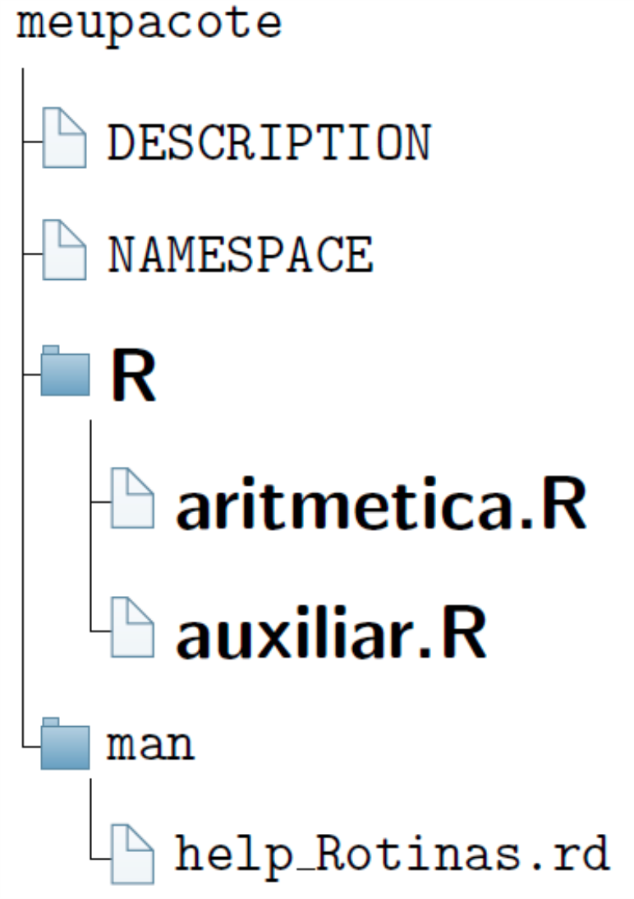

conf_files_pkg.RmdOs arquivos do pacote, mencionados na Subseção Esqueleto básico de um pacote R, serão agora editados, uma vez que o RStudio constroi apenas um modelo para os arquivos.
Inicialmente, iremos apresentar duas rotinas para a construção do pacote:
# Sem edição do pacote `roxygen2`
aritmetica <- function (a, b, op) {
# op: divisi, multi, soma, subtra
if (op == "divisi") x <- divisi(a, b)
if (op == "multi") x <- multi(a,b)
if (op == "soma") x <- soma(a,b)
if (op == "subtra") x <- subtra(a,b)
return(x)
}
# Funcoes auxiliares
# Soma
soma <- function (a, b) {
calculo <- a + b
return(calculo)
}
#Subtracao
subtra <- function (a, b) {
calculo <- a - b
return(calculo)
}
# Multiplicacao
multi <- function (a, b) {
calculo <- a * b
return(calculo)
}
# Divisao
divisi <- function (a, b) {
calculo <- a / b
return(calculo)
}A ideia dessas funções é muito simples, apresentar as quatro operações básicas entre dois números. Claro que não faz sentido desenvolver um pacote para algo trivial. Contudo, o enfoque é entender as peculiaridades do processo de construção de um pacote.
E um passo muito interessante ocorre sobre essas duas rotinas, pois uma iremos exportar e a outra não. Isto significa que ao carregar o pacote, funções do pacote que não são exportáveis, tornam-se invisíveis, podendo ser observadas apenas abrindo o arquivo nome_pacote.tar.gz. Às vezes, desejamos omitir algumas funções que são auxiliares para o nosso código. Isso significa, que elas sozinhas não terão utilidades. Dessa forma, não se faz necessário apresentá-las. Em outras situações, o que fazemos é omitir ou dificultar a visualização de determinadas funções, por algum interesse, mesmo sabendo que o código é aberto.
No nosso caso, apenas a função aritmetica será exportável. Perceba, que o cerne do pacote está na rotina auxiliar.R, pois é nela que temos as quatro funções para as operações aritméticas. Veremos mais a frente como definir a exportação de funções em um pacote.
